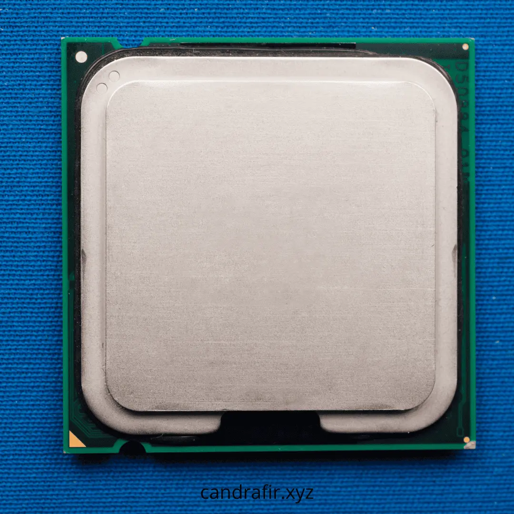
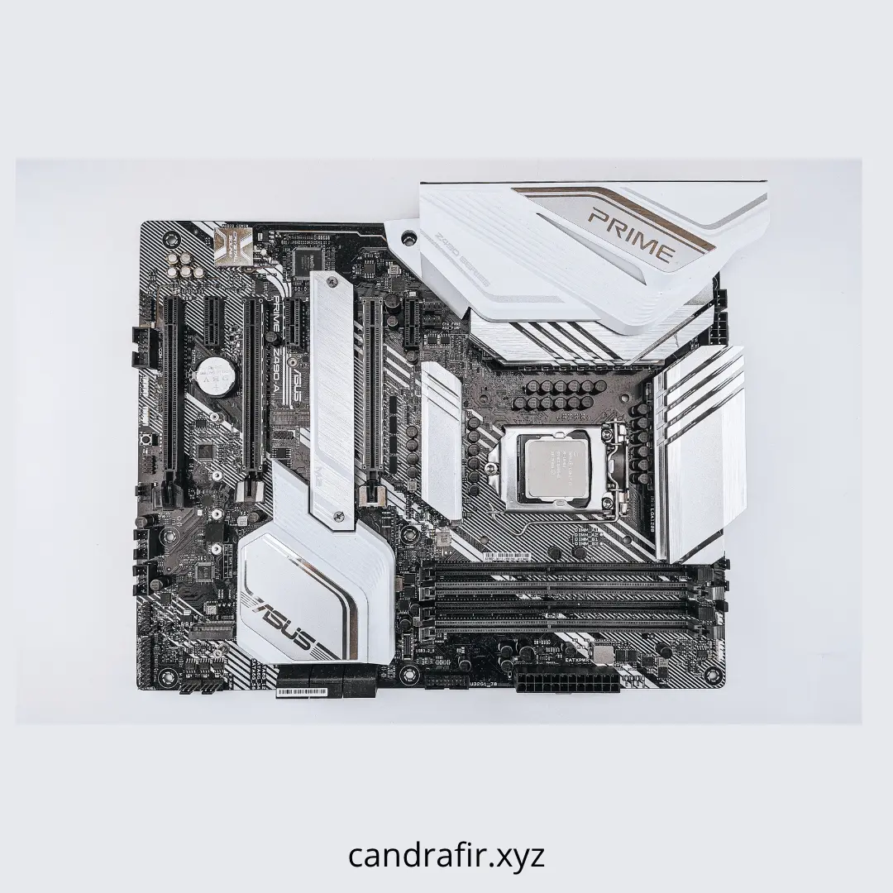
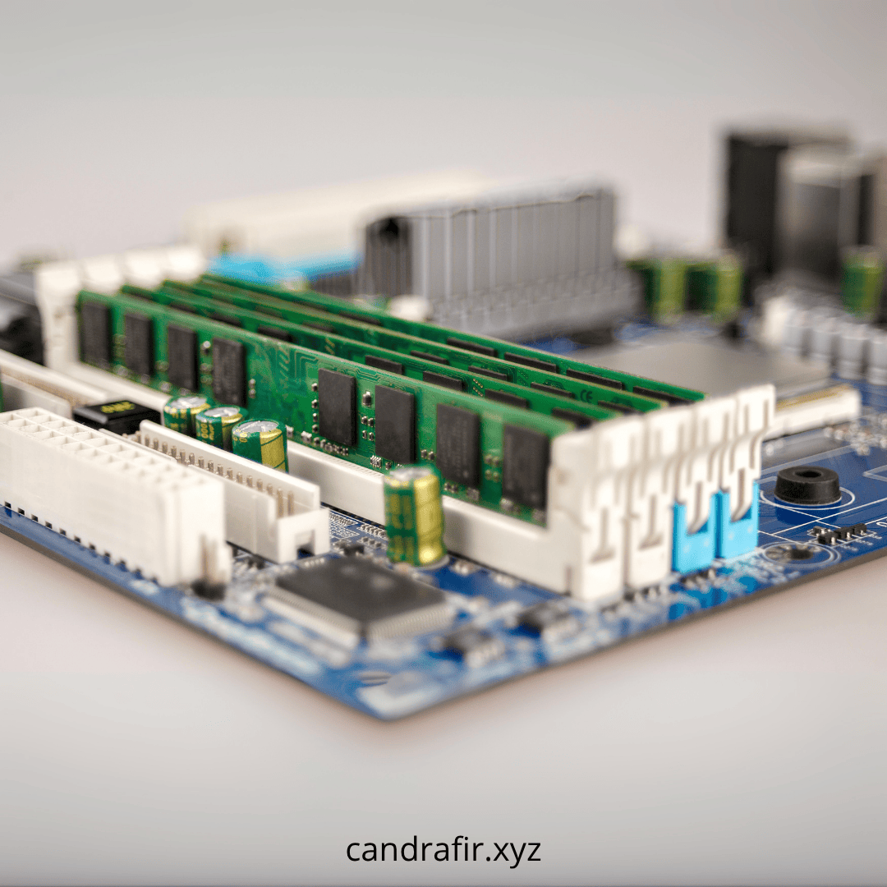
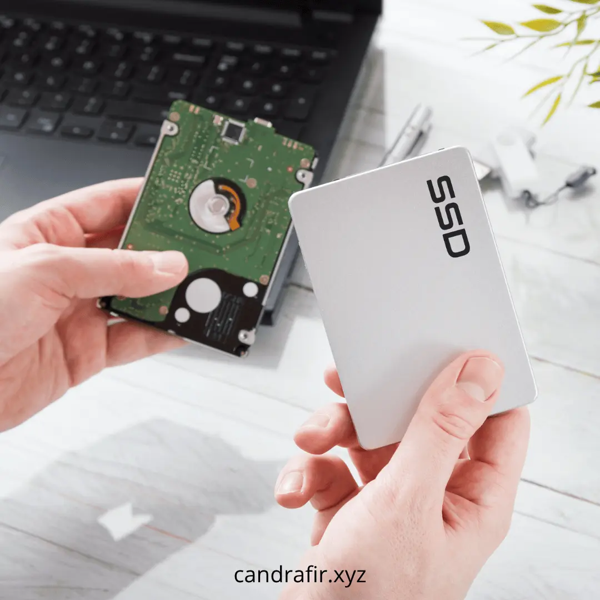
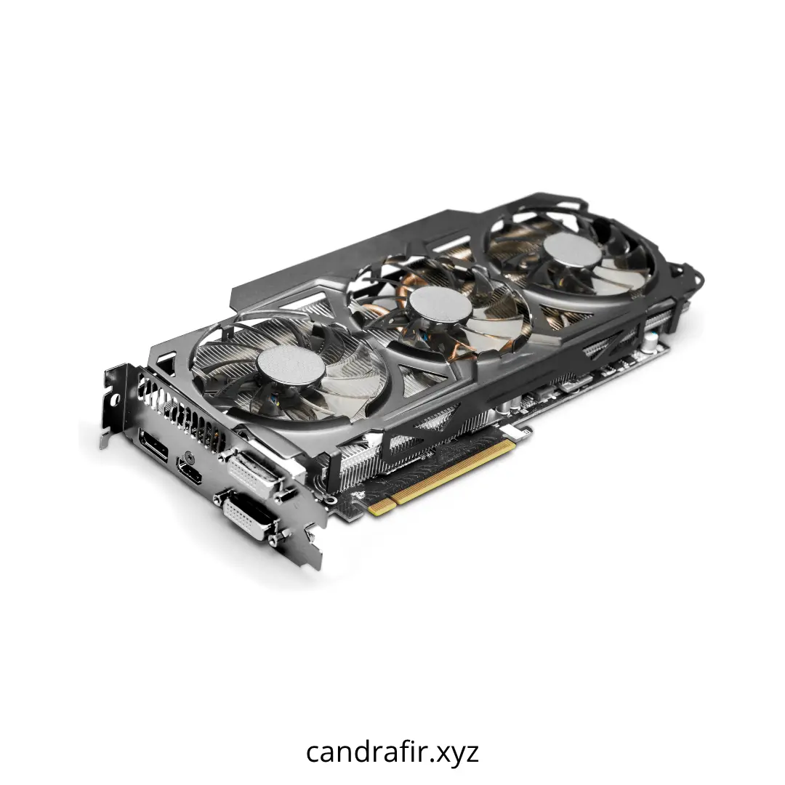
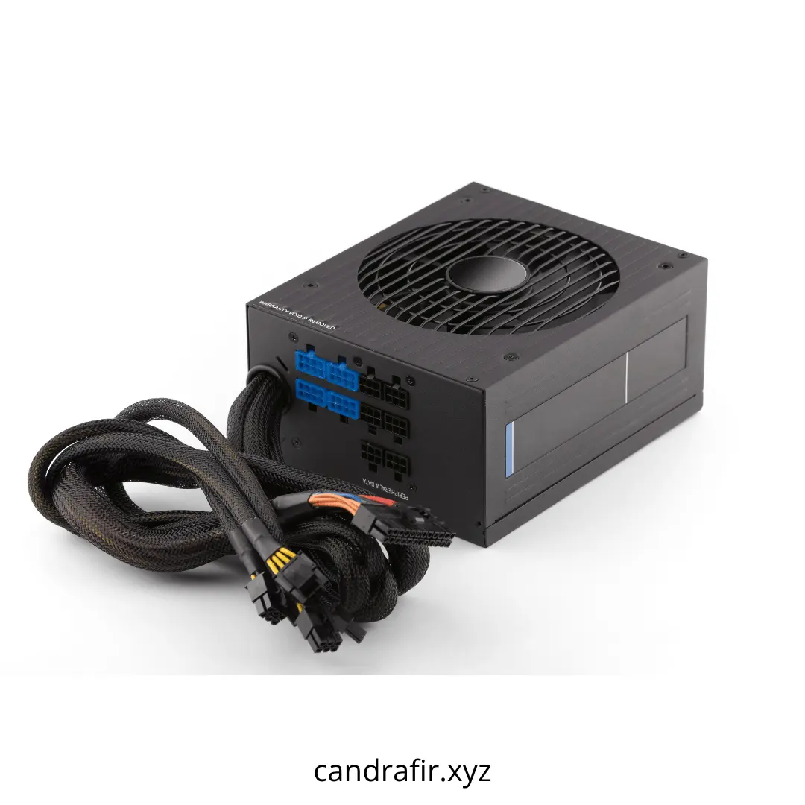
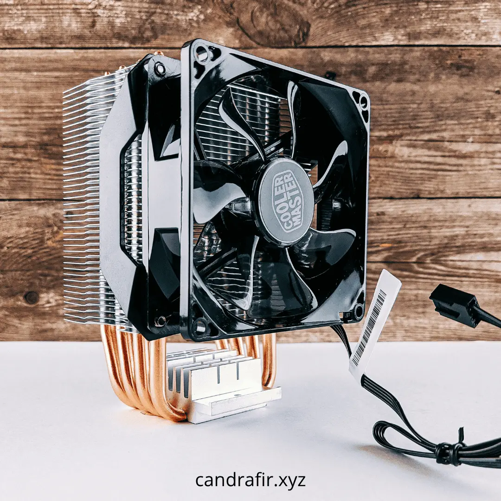
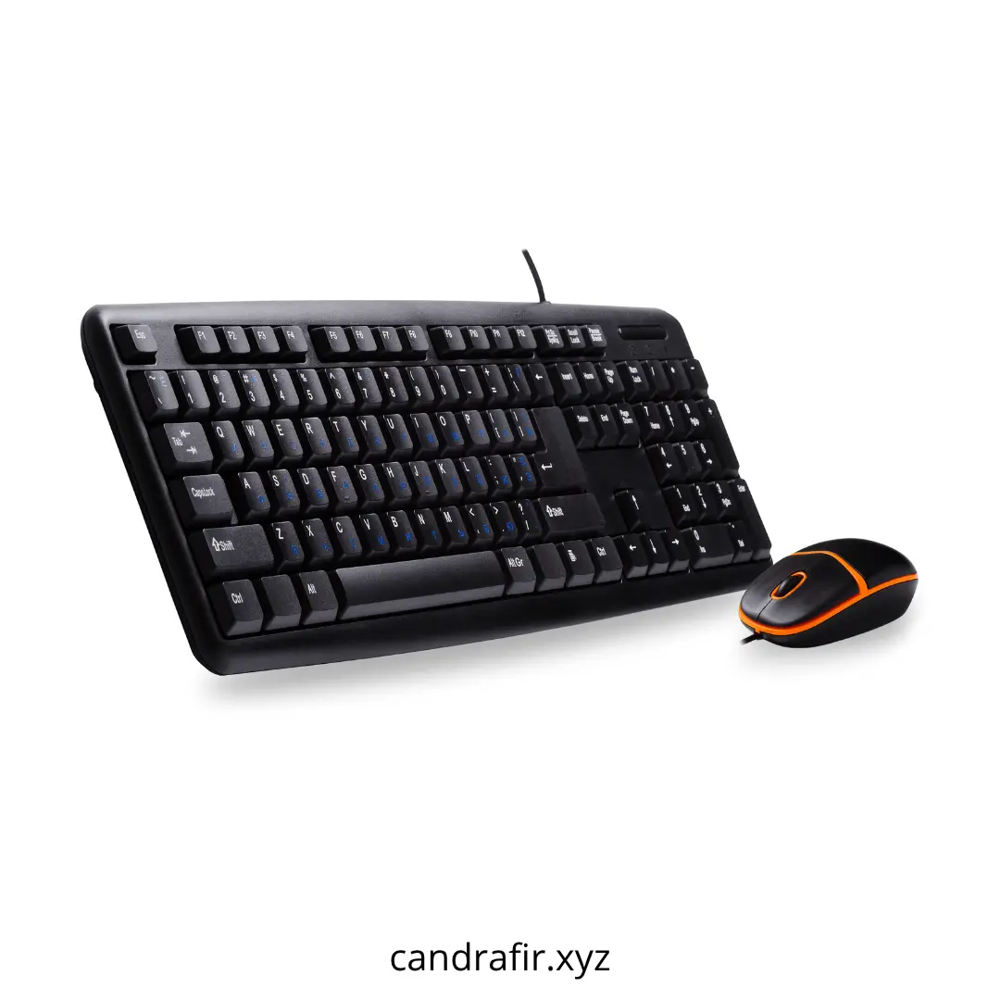
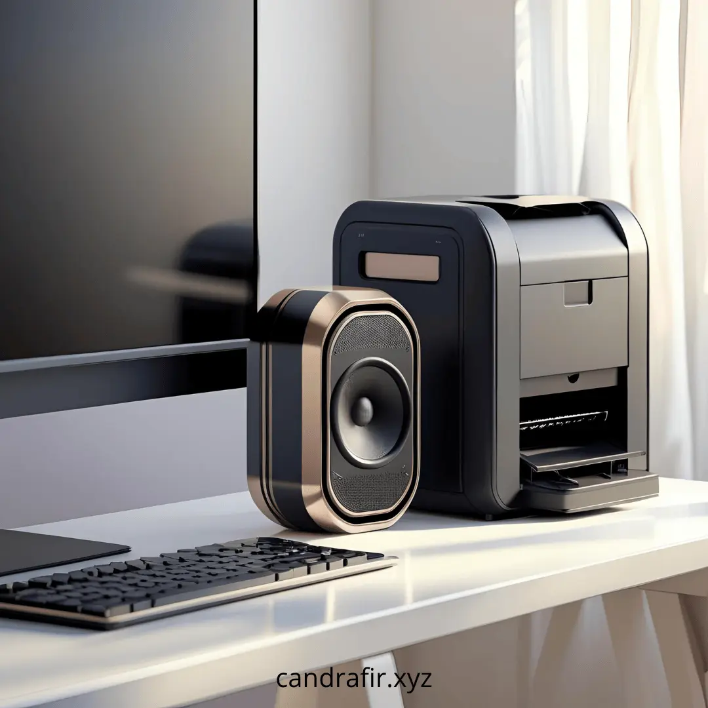
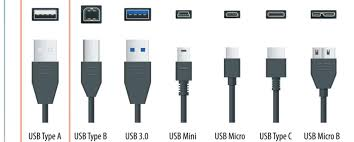

Komponen Perangkat Keras Komputer dan Fungsinya
Diposting pada 26 Januari 2024 oleh Candra
Komputer terdiri dari komponen fisik yang bisa kita sentuh dan komponen non-fisik (software). Di sini kita fokus pada perangkat keras—bagian penting yang membuat komputer bisa menyala, memproses data, dan berinteraksi.
1. CPU (Central Processing Unit)
Penjelasan: CPU adalah “otak” komputer, bertugas menjalankan instruksi program seperti kalkulasi dan logika. Kecepatannya diukur dalam GHz.
2. Motherboard (Papan Induk)
Penjelasan: Motherboard adalah dasar dari semua komponen lain—tempat terhubungnya CPU, RAM, kartu grafis, dan lain-lain, serta mengalirkan daya dan data antar bagian.
3. RAM (Random Access Memory)
Penjelasan: RAM menyimpan data dan program yang sedang berjalan buat CPU akses cepat. Semakin besar RAM, semakin lancar menjalankan banyak aplikasi sekaligus.
4. Penyimpanan (HDD / SSD)
Penjelasan: HDD atau SSD menyimpan sistem operasi, aplikasi, dan data secara permanen. SSD lebih cepat dan tahan banting, sedangkan HDD punya kapasitas besar tapi lebih lambat.
5. GPU / Kartu Grafis
Penjelasan: GPU mengolah grafis dan visual ke monitor. Sangat penting untuk gaming, desain, dan editing video agar tampilannya halus dan berkualitas.
6. PSU (Power Supply Unit)
Penjelasan: PSU mengonversi listrik dari stop kontak ke bentuk yang bisa digunakan oleh komponen komputer. Tanpa PSU, komputer tidak bisa menyala.
7. Cooling System (Fan & Heatsink)
Penjelasan: Pendingin seperti fan dan heatsink mencegah CPU/GPU terlalu panas saat bekerja berat, menjaga performa dan umur komponen.
8. Input Devices (Keyboard & Mouse)
Penjelasan: Keyboard digunakan untuk mengetik dan memberikan perintah, sementara mouse mengontrol kursor dan navigasi di layar.
9. Output Devices (Monitor, Speaker, Printer)
Penjelasan: Monitor menampilkan visual, speaker mengeluarkan suara, dan printer mencetak dokumen — alat yang membuat komputer “terlihat, terdengar, dan bisa cetak”.
10. External Storage & Ports
Penjelasan: USB flashdisk, external HDD, dan port seperti USB, HDMI, RJ45 memungkinkan kita menyambungkan dan memindahkan data antar perangkat.
Keterangan & Ringkasan:
- Setiap komponen berperan dalam alur kerja komputer: dari input → pemrosesan → output → penyimpanan.
- Komposisi yang seimbang (CPU, RAM, penyimpanan) membuat komputer berjalan optimal dan stabil.
- Pemilihan hardware harus sesuai kebutuhan—gaming, desain, pelajaran (SMK), dan lain-lain.